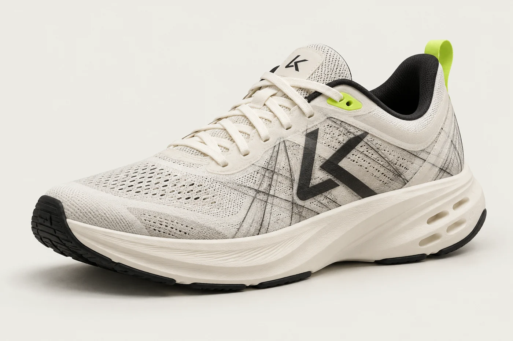
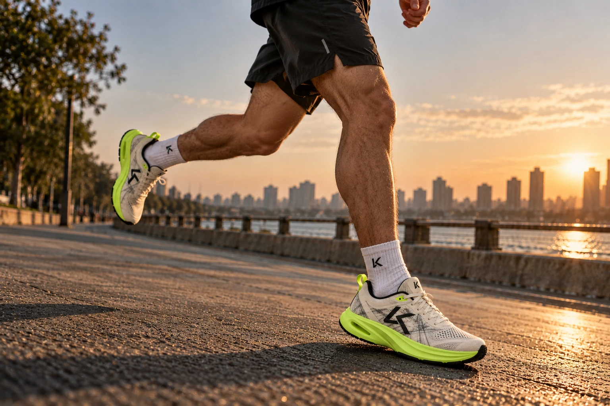

INDEPENDENT IN SPIRIT.

ORIGINAL BY DESIGN.
THE ORIGINALS COLLECTION02 SILHOUETTES / ONE POINT OF VIEW
TWO WAYS
TO BE YOURSELF.
A little less expected.
A lot more you.
Explore LK-007 ↗

LK-009
EverydayLOW-KEY NAME.
HIGH-KEY IMPACT.